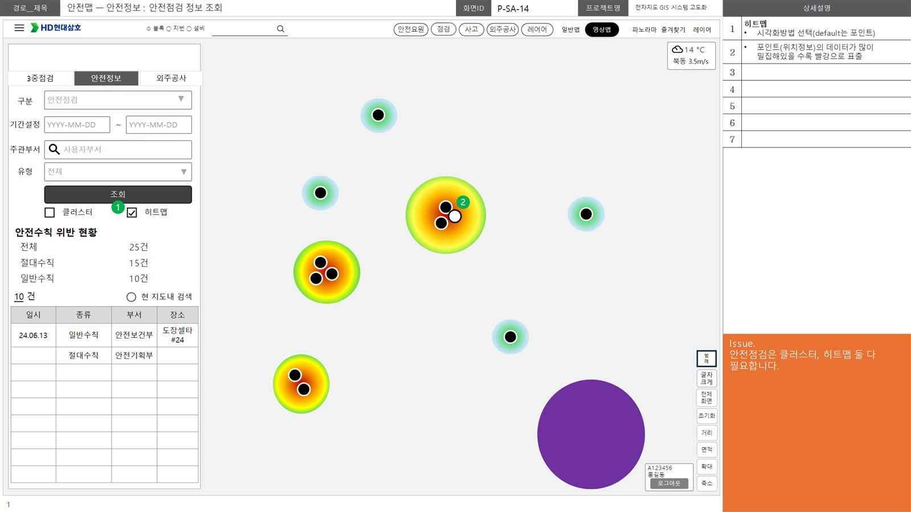

GIS Safety Map
Planning the Safety Map and map-layer admin for a shipyard GIS — requirements turned into functions and screens.

Catching satellite system faults early
An integrated monitoring system for micro-satellite imagery (SIMS) for the Korea Aerospace Research Institute. The overall UI was designed by the team’s designer; I led the fault monitoring part — defining how failures are detected, shown and followed up, and designing those screens.
1-1. Background
What SIMS does, who operates it, and why fault monitoring mattered. To be filled in.
MY SCOPE
Most of the SIMS interface was designed by another designer on the team. This case study covers only the fault monitoring screens I was responsible for.
2-1. Requirements
Which faults needed to be caught, who responds, and what the screens had to show. To be filled in.
3-1. Fault Monitoring Screens
How a fault is detected, shown and followed up on screen. To be filled in.
To be filled in.
Planning the Safety Map and map-layer admin for a shipyard GIS — requirements turned into functions and screens.

Web-based 3D software that maps solar radiation onto building walls — from data production to histograms.